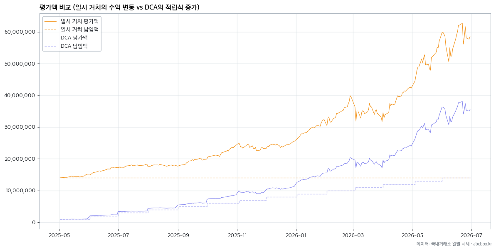
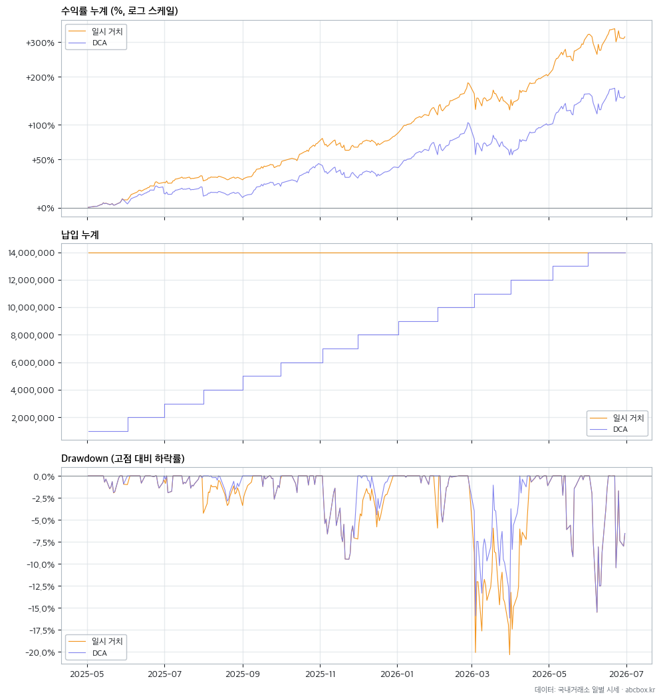
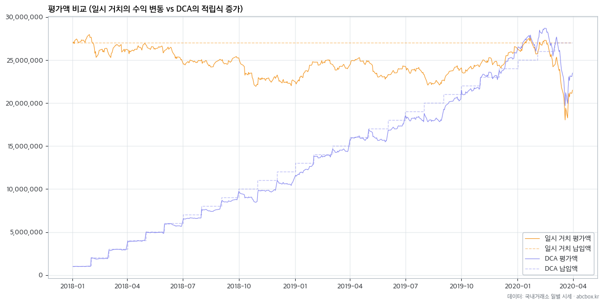
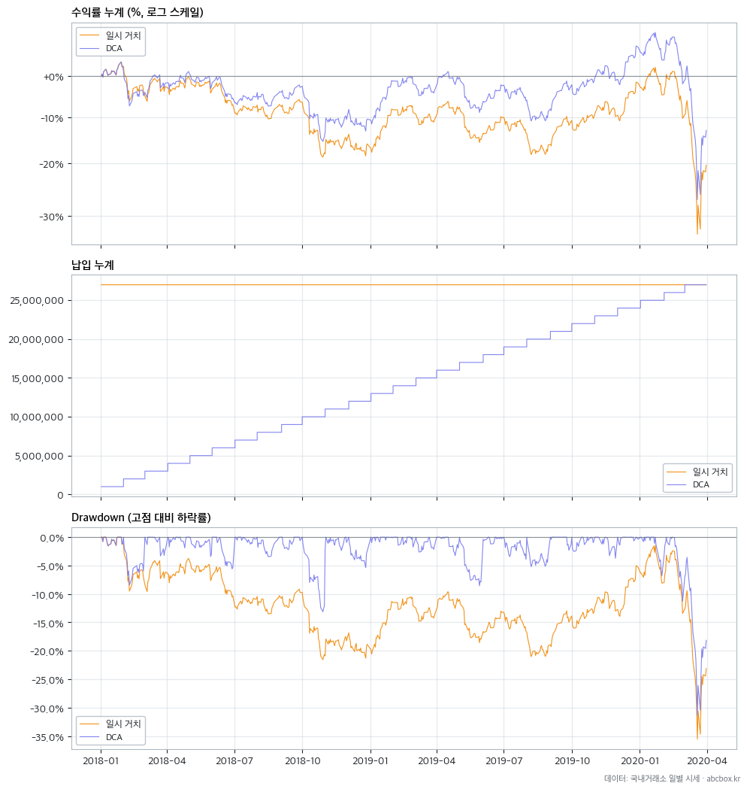
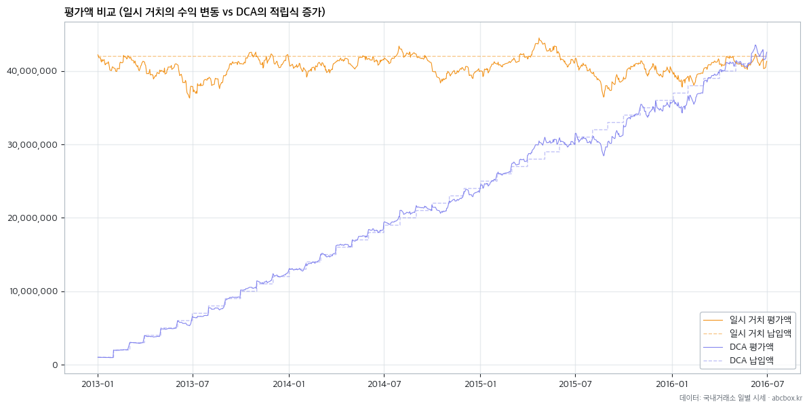
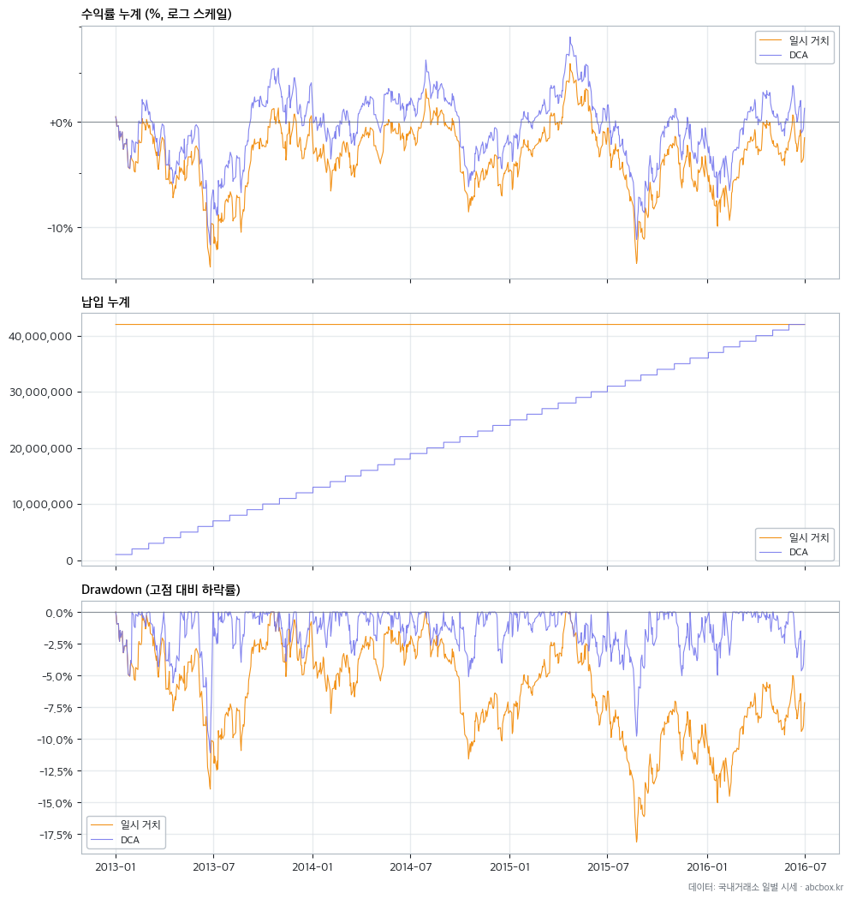

직장인에게 투자할 수 있는 목돈이 있다면 첫날 한 번에 넣는 것이 좋을까? 반대로 목돈은 없지만 월급에서 매달 100만원을 투자할 수 있다면 어떤 결과가 나올까?
과거 코스피의 상승장과 하락장, 횡보장에 두 방식을 직접 적용해봤다.
매달 같은 금액을 투자하는 방법을 DCA(Dollar Cost Averaging, 비용 평균화/정액 적립식)라고 한다. 지난 바이 앤 홀드 글 말미에서 적립식 투자도 공부가 필요하다고 했고 상승 때 적게 사고 하락 때 많이 사는 가치 평균화 방법(VA)도 있지만 이번 글에서는 단순한 DCA부터 알아보기로 한다.
일시 거치와 DCA 비교
일시 거치는 한 번에 전액을 투자하는 방식이므로 시장의 상승과 하락을 온몸으로 받게 된다. 자산 투자는 기본적으로 자산이 오를 거라는 데 돈을 거는 것이므로 오르기만 한다면 오른 만큼을 온전히 먹을 수 있다. 반대로 떨어진다면 “버퍼 없이” 손실을 그대로 감수해야 한다.
DCA는 고점에 매수하더라도(상투를 잡더라도) 다음 매수 기회가 있으므로 심리적 충격이 적지만 반대로 상승장에서는 수익률이 뒤처지게 된다. 다시 정리하자면 일시 거치는 투자금이 시장에 머무는 기간이 길어 상승장에서 유리하지만 투자하자마자 하락을 맞을 위험도 있다. DCA는 처음 진입 시점의 시장 영향을 분산하게 되지만 상승장에서는 투자금이 작은 만큼 수익도 작게 된다.
여기서는 내가 목돈이 있을 경우 한 번에 투자하는 일시 거치와 목돈이 없어서 월급에서 100만원씩 빼서 투자하는 경우를 과거 데이터에 대해 백테스트로 비교하고자 한다. 목돈이 있는데 적립식으로 투자하는 건 잉여 투자금 문제가 있으므로 이번엔 고려하지 않았다.
백테스트 전제와 용어 설명
비교 전제
- 일시 거치(Lump Sum): 투자 기간 전체의 납입액에 해당하는 목돈을 처음부터 보유하고 있으며 첫 거래일에 전액 투자
- DCA(Dollar Cost Averaging): 월급에서 매달 100만원씩 투자금이 생기며 매월 첫 거래일에 투자
- 매수가는 거래일의 시가와 종가의 중간 가격으로 선택
- 두 방식의 최종 총 납입액은 같지만 투자금이 준비되는 시점이 다름
- ETF는 1주 단위로 매수하며 1주를 사고 남은 금액은 다음 달로 이월
- 이월된 현금에는 별도의 이자가 붙지 않는 것으로 가정
DCA 매수 예시
매월 100만원을 추가하되 ETF를 사고 남은 현금을 다음 달로 넘기기 때문에 실제 매수 금액은 100만원보다 조금 많거나 적을 수 있다.
| 매수일 | 보정 주당 가격 | 매수 수량 | 매수 금액 |
|---|---|---|---|
| 2025-05-02 | ₩33,500 | 29 | ₩971,500 |
| 2025-06-02 | ₩35,823 | 28 | ₩1,003,039 |
| 2025-07-01 | ₩41,777 | 24 | ₩1,002,642 |
| 2025-08-01 | ₩42,514 | 24 | ₩1,020,342 |
| 2025-09-01 | ₩42,503 | 23 | ₩977,566 |
| 2025-10-01 | ₩47,881 | 21 | ₩1,005,506 |
| 2025-11-03 | ₩58,997 | 17 | ₩1,002,941 |
| 2025-12-01 | ₩55,764 | 18 | ₩1,003,755 |
| 2026-01-02 | ₩61,962 | 16 | ₩991,392 |
| 2026-02-02 | ₩74,876 | 13 | ₩973,394 |
| 2026-03-03 | ₩90,187 | 11 | ₩992,054 |
| 2026-04-01 | ₩81,496 | 12 | ₩977,948 |
분배금 반영 방법
KODEX 200의 과거 분배 내역을 직접 적용하는 대신 한국투자증권 KIS OpenAPI에서 제공하는 코스피200 지수 데이터를 이용했다.
- 코스피200 가격지수:
2001 - 코스피200 총수익지수(TR):
2035 - 코스피200 순수익지수(NTR):
2036
이 중 배당 원천세를 차감한 뒤 재투자하는 것으로 가정한 코스피200 NTR과 가격지수의 차이를 이용했다.
NTR과 가격지수 사이에 누적된 배당 효과를 실제 KODEX 200 종가에 반영해 백테스트용 가격을 만들었다.
따라서 실제 KODEX 200의 가격 흐름과 추적오차는 유지하면서 분배금을 세후 재투자했을 때의 효과를 계산에 넣었다.
지표 설명
- 총 납입액: 계좌에 넣은 원금
- 최종 평가액: 백테스트 종료일에 주식 평가액과 남은 현금을 합한 금액
- 누적 수익: 최종 평가액에서 총 납입액을 뺀 금액
- 누적 수익률: 누적 수익을 납입액으로 나눈 단순 수익률
- MDD(Maximum Drawdown, 최대 낙폭): 이전 최고점에서 하락한 최대 비율. DCA는 납입금 영향을 제거해 계산
- 변동성: 수익률이 얼마나 크게 움직였는지를 나타내는 값. 납입금 영향을 제거해 계산
비용과 세금
- 일시 거치: 최초 매수 시 거래비용 0.015% 차감
- DCA: 매월 매수 시 거래비용 0.015% 차감
- 세금: 개인 투자자의 국내 상장 주식형 ETF 매매차익은 비과세인 것으로 가정
- 분배금에 대한 원천세 효과는 코스피200 NTR 보정에 이미 포함되어 있으므로 별도로 다시 차감하지 않음
상승장 - 먼저 들어간 돈이 더 많이 번다
2025년 5월부터 올해 6월까지 14개월 동안 코스피는 폭발적인 상승을 보여줬다. 이런 상승장에서 둘은 어떻게 수익을 내줄까?
아래는 코스피를 추종하는 KODEX 200 ETF에 DCA는 매월 100만원씩, 일시 거치는 1,400만원을 첫날 한 번에 투자(납입)한 결과 그래프다.

DCA가 일시 거치를 열심히 쫓아가지만 마지막에는 차이가 더 벌어지는 것을 알 수 있다. 일시 거치는 1,400만원 전부가 첫날부터 시장 상승의 효과를 받지만 DCA는 매달 투자금이 뒤늦게 합류한다. 시장이 계속 오를수록 먼저 들어간 돈이 많은 일시 거치가 유리할 수밖에 없다.
수익률 등을 비교한 그래프로 다시 보자.

수익률이 점점 벌어지는 것을 볼 수 있다. 하지만 하락률에도 주목해보자. 2026년 3월의 하락장 때 DCA가 덜 하락했음을 볼 수 있다. 수치로 보자.
| 전략 | 총 납입액 | 최종 평가액 | 누적 수익 | 누적 수익률 | MDD | 변동성 | 총 거래비용 |
|---|---|---|---|---|---|---|---|
| 일시 거치 | ₩14,000,000 | ₩58,589,155 | ₩44,589,155 | 318.5% | -20.4% | 43.0% | ₩2,095 |
| DCA | ₩14,000,000 | ₩35,574,138 | ₩21,574,138 | 154.1% | -16.2% | 42.9% | ₩2,093 |
DCA 누적 수익률이 일시 거치의 반도 안된다. 결과를 미리 알았다면 영끌이라도 했으면 싶다. 하지만 우리에게는 미래 예지력이 없기 때문에 그게 안된다. DCA라도 꾸준히 해서 154.1% 수익을 거둘 수 있었겠다고 생각하는 게 맞다.
하락 측면에서 보면 일시 거치는 최대 약 20% 하락했으므로 예를 들어 직전 고점 평가액이 4천만원이었다면 800만원이 하락했다. 반면 DCA는 16% 정도 하락했으므로 직전 고점 평가액이 2천만원이었다면 320만원 정도가 하락했다. 상승 수익도 작았지만 하락 때 손실도 방어가 된다는 것을 알 수 있다.
하락장 - 쌀 때 더 사고 반등하면 힘이 난다
이번엔 2018년 1월부터 2020년 3월 코로나 폭락까지의 27개월 하락장을 살펴보자.

둘 다 납입 금액에 못 미치는 손실 상태가 이어지는데 2020년 들어서면서 DCA가 일시 거치를 추월했다! 이것은 말하자면 2019년 8월까지 가격이 내려가는 동안 DCA는 같은 100만원으로 더 많은 수량을 모았고 이후 시장이 반등하자 낮은 가격에서 사 모은 수량이 힘을 내기 시작했다고 볼 수 있다.
최종 평가액 기준으로는 2020년이 돼서 DCA가 일시 거치를 추월했지만 아래 그래프를 보면 단순 수익률은 지속적으로 DCA가 높았음을 볼 수 있다.

2020년 2월부터 시작된 코로나 폭락장은 둘 다 피하지 못했지만 최대 하락률(MDD) 역시 DCA가 -31.4%로 일시 거치보다 낙폭이 작았다.
| 전략 | 총 납입액 | 최종 평가액 | 누적 수익 | 누적 수익률 | MDD | 변동성 | 총 거래비용 |
|---|---|---|---|---|---|---|---|
| 일시 거치 | ₩27,000,000 | ₩21,510,319 | ₩-5,489,681 | -20.3% | -35.5% | 19.8% | ₩4,046 |
| DCA | ₩27,000,000 | ₩23,496,156 | ₩-3,503,844 | -13.0% | -31.4% | 19.8% | ₩4,049 |
횡보장 - 일시 거치가 횡보하는 동안 DCA는 조금씩 전진
코스피는 저성장 국면이 상당히 길었는데 특히 2010년대에는 "박스피"라고 하여 상승, 하락이 제한적인 답답한 흐름이 상당히 오랜 기간 이어졌었다. 이번엔 2013년 1월부터 2016년 6월까지, 42개월간의 횡보장을 살펴보자.

하락장 때와 비슷하게 반등 국면을 거치면서 DCA가 상승률이 좋음을 볼 수 있다. 평가액뿐 아니라 납입액 대비 수익률과 최대 하락률도 함께 살펴보자.

| 전략 | 총 납입액 | 최종 평가액 | 누적 수익 | 누적 수익률 | MDD | 변동성 | 총 거래비용 |
|---|---|---|---|---|---|---|---|
| 일시 거치 | ₩42,000,000 | ₩41,336,455 | ₩-663,545 | -1.6% | -18.1% | 12.4% | ₩6,298 |
| DCA | ₩42,000,000 | ₩42,571,470 | ₩571,470 | 1.4% | -11.1% | 12.4% | ₩6,297 |
이 역시 하락 국면에서 DCA는 같은 금액으로 좀 더 많은 주식을 살 수 있고 반등 국면에서 상승률이 좋아지는 걸로 해석된다. 수치상으로도 일시 거치는 -1.6%로 손실을 봤지만 DCA는 1.4% 수익을 얻었다. 그러면서도 DCA의 MDD는 -11.1%로 일시 거치보다 낙폭이 작았다.
그런데 사실 3년 6개월 동안 이런 수익률은 실망스럽다. 채권이나 예적금 이자 같은 기회 비용과 물가 상승을 생각한다면 이건 수익이라고 부르기 미안한 수준이다. 장기 투자가 답이라고 말은 하지만 주식 투자를 하는 사람들이 이런 답답한 국면에 꾸준히 투자하려면 뚝심과 끈기가 필요하다.
직장인은 적립식으로 투자한다
세 가지 시장 상황을 비교해봤다. 상승장에서는 일시 거치가 압도적으로 유리했고 하락장과 횡보장에서는 DCA가 선전했다.
문제는 상승, 하락을 미리 알 수 없다는 것이다. 지나고 나면 “그때 한 번에 살걸”, “조금씩 나눠 살걸” 하는 답이 너무 잘 보이지만 당장은 내일 주가가 오를지 떨어질지 아무도 모른다. 목돈이 이미 있다면 일시 거치는 투자금을 더 일찍, 더 오래 시장에 넣어두는 선택이다. 반면 직장인의 월급은 아직 통장에 들어오지 않은 미래의 돈이다. 월급이 들어올 때마다 감당할 수 있는 금액을 꾸준히 투자하면 된다.
상승장에서 수익이 덜 나는 건 아쉽다. 하지만 중요한 것은 "Timing the market"이 아니라 "Time in the market"이라고 한다. 타이밍을 맞춰 한 방을 노리는 것이 아니라 꾸준히 시장에 참여해야 한다는 것이다.
적어도 백테스트에서는 적립식이 하락장에서 덜 떨어지고 횡보장에서 더 모을 수 있음을 확인할 수 있었다. 어쩌면 직장인에게 최고의 매수 타이밍은 다음 월급날이 맞다는 생각이 든다.